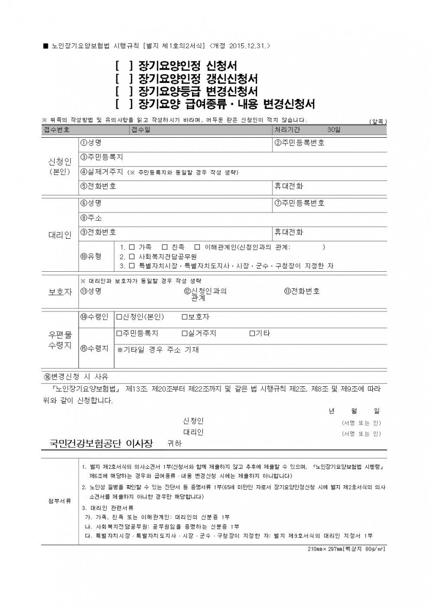
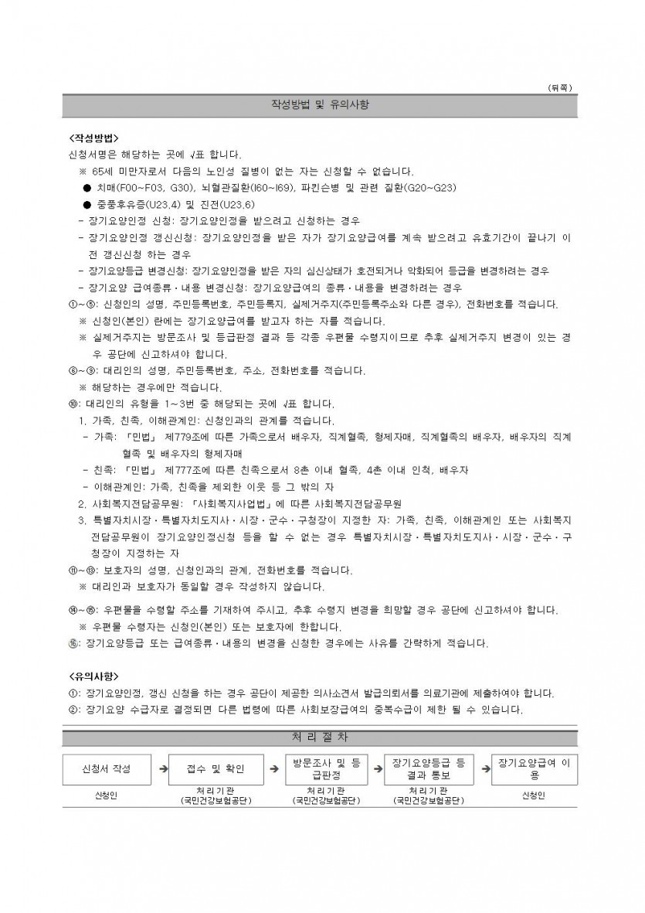

장기요양보험 등급신청 방법
페이지 정보
작성자 행복한센터 댓글 0건 조회 702회 작성일 19-09-28 23:41본문
* 장기요양보험 등급신청 방법
1) 장기요양보험 등급신청서 작성
2) 국민건강보험 관리공단에 제출 (방문제출, 팩스 전송, 인터넷 제출)
3) 현장 확인을 위한 공단직원 배정 (약 1주일 소요)
4) 공단직원의 현장 확인 (직원이 가정에 방문하여 52개 항목에 대하여 조사)
5) 의사소견서 제출 (만 65세 미만인 경우 노인성질환 확인 유무, 만 65세 이상도 제출,
단, 병원에 내원이 불가능하다고 판단되는 경우 제외될 수 있음)
6) 등급판정 위원회 심사 (1달에 2회 개최, 전문의와 사회복지 담당전문가가 등급부여 논의)
7) 등급판정 결정 (휴대폰 문자로 전송되며 등급을 받은 경우 공단으로 방문함)
8) 등급판정 서류 수령 및 교육 (장기요양인정서, 표준장기이용계획서, 복지용구급여확인서 등)
9) 서비스 기관 선택 (입소시설 또는 재가시설을 반드시 해당구의 시설을 이용해야
한다는 규정은 없음)
10) 서비스 계약 (기관과 서비스 계약을 하고 입소 또는 요양보호사를 소개 받으며,
계약 시 필요한 부분은 기관에 요청)
11) 서비스 이용 (대상자의 상황에 적합한 시간대에 선택하여 서비스를 이용하도록 하며,
불만 사항 발생 시 기관으로 통보)
12) 월말 본인 부담금 납부 (본인 부담금 : 일반 15%, 의료수급자 7.5%, 기초수급자 0%)
13) 등급 갱신 (1년에 1번씩 등급을 갱신하며 등급 만료 90~30일 사이에 갱신 신청,
2회 이상 연속으로 동일한 등급이 나온 경우, 3회째부터는 3년 기한의 등급 받음)

댓글목록
등록된 댓글이 없습니다.